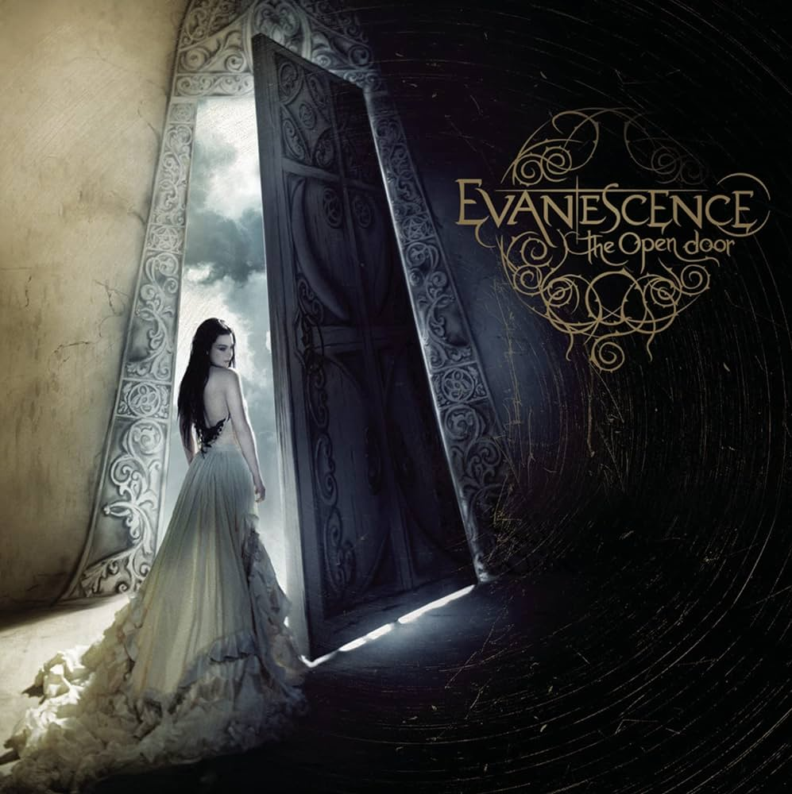

|
|
 |
 |
 |
Por décadas, o Evanescence tem cativado os corações dos fãs de música ao redor do mundo com sua mistura única de rock alternativo e elementos góticos. Fundada em 1995, em Little Rock, Arkansas, a banda teve uma jornada repleta de altos e baixos, mas sempre manteve sua identidade sonora marcante.
 |
Desde o lançamento de seu álbum de estreia, "Fallen", em 2003, que apresentou sucessos como "Bring Me to Life" e "My Immortal", o Evanescence se estabeleceu como uma força a ser reconhecida na cena musical. Suas letras profundas e poderosas, combinadas com a voz única de sua vocalista, Amy Lee, tocaram milhões de pessoas em todo o mundo.
Ao longo dos anos, a banda enfrentou desafios internos e externos, incluindo mudanças na formação e pressões da indústria musical. No entanto, o Evanescence sempre encontrou uma maneira de se reinventar e continuar a produzir música que ressoa com uma ampla audiência.
|  |
Sob a liderança de Amy Lee, o Evanescence continuou a evoluir, explorando novos sons e temas em álbuns como "The Open Door" e "Evanescence". A capacidade da banda de se adaptar e crescer ao longo do tempo é um testemunho de sua resiliência e talento duradouro.
Com fãs leais em todo o mundo e uma discografia que deixou uma marca indelével na história da música, o Evanescence permanece uma das bandas mais icônicas e influentes do século XXI. E sua jornada está longe de terminar, pois continuam a criar música que transcende os limites do tempo e do gênero.